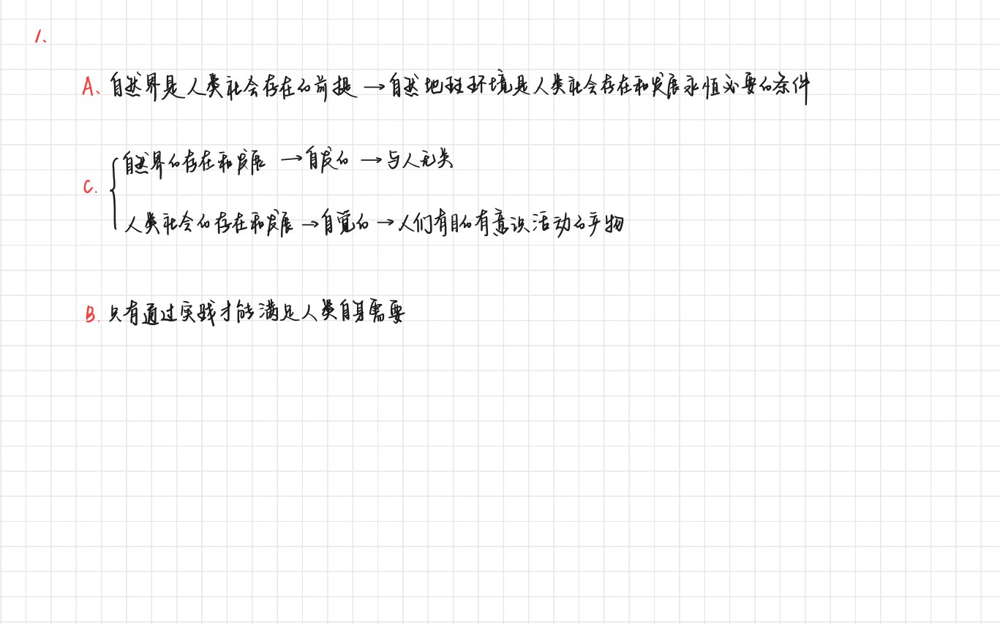

1题单选
视频已定位
正确处理人与自然的关系（自然界与人类社会交叉重叠、相互作用）
《X八第四套·单选精讲》0:00:00小节：自然社会关系

题目原文
在深题的海底世界，章鱼是当之无愧的“伪装大师”。当它游过珊瑚礁时，皮肤几乎在瞬同获能从米色变得灰褐，质感也从光滑变得粗糙，与周围岩石的纹理和色彩“完美融合”。人工材料能否像章鱼一样，拥有魔术般的“变装”能力？《自然》杂志发表了一项新成果，受章鱼、乌贼等头足类动物启发，科研团队开发出一种新型聚合物材料， 首次实现在单一器件上对表面视觉纹理和结构色彩的独立、动态调控。这项技术有望为动态伪装、自适应显示、智能建筑以及互动艺术等领域，提供全新的解决方案。模仿章鱼开发具有“变装”能力的材料，这表明
A. 自然界与人类社会相互依存、互为前提
B. 世界的现存形式可以满足人的一切需要
C. 自然界运行的固有规律也是人类社会的发展规律
D. 自然界与人类社会是交叉重叠和相互作用的